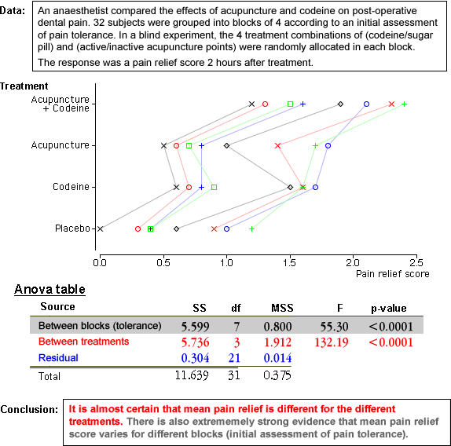

Anova table
The three components that add to total sum of squares are usually laid out in an analysis of variance table (or simply anova table).
The anova table adds a few extra columns:
Tests
The F-ratio for differences between the treatments compares the variability explained by the treatments to the residual (unexplained) variation. The larger the F-ratio, the stronger the evidence for a difference between treatments. A formal hypothesis test is based on the F-ratio and its p-value is the probability of getting as big an F-ratio as that recorded if all treatment means were equal. It is interpreted in the same way as all other p-values.
A p-value can also be found to test whether there are differences between the blocks, but this is usually of less interest.
In practice, computer software will produce the anova table for you, so you only need to interpret the p-value associated with the treatments.
Examples
